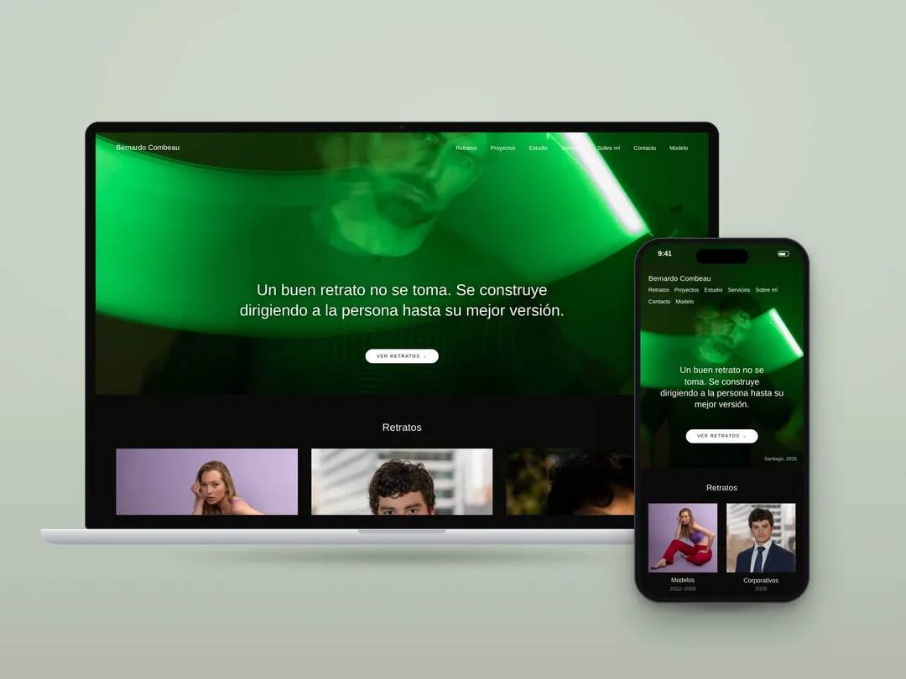
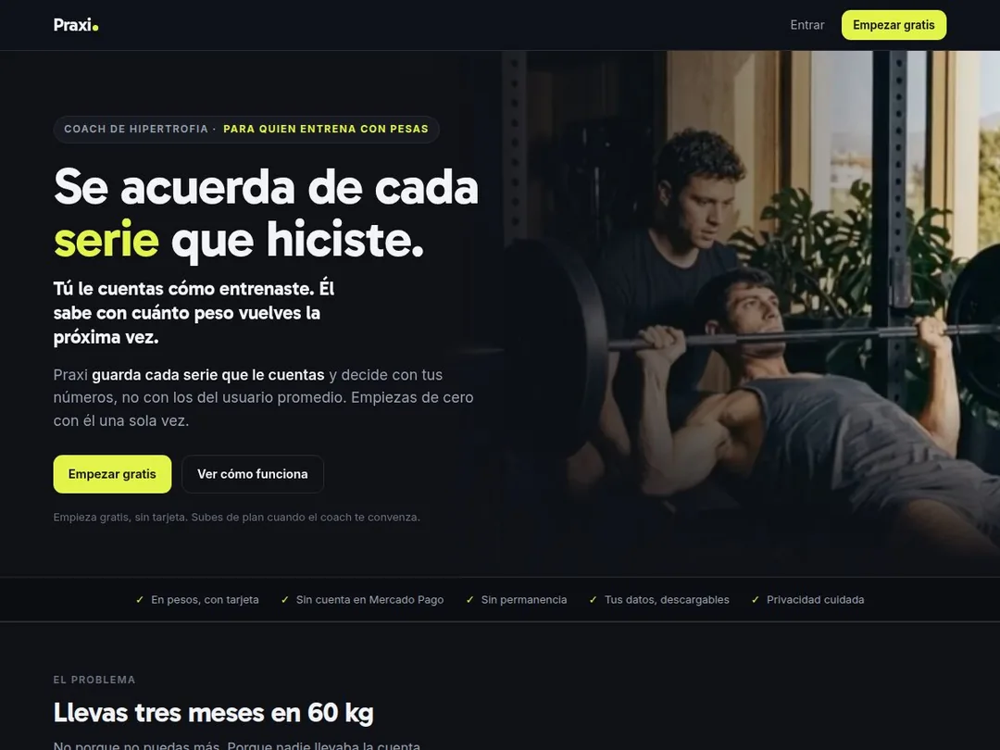
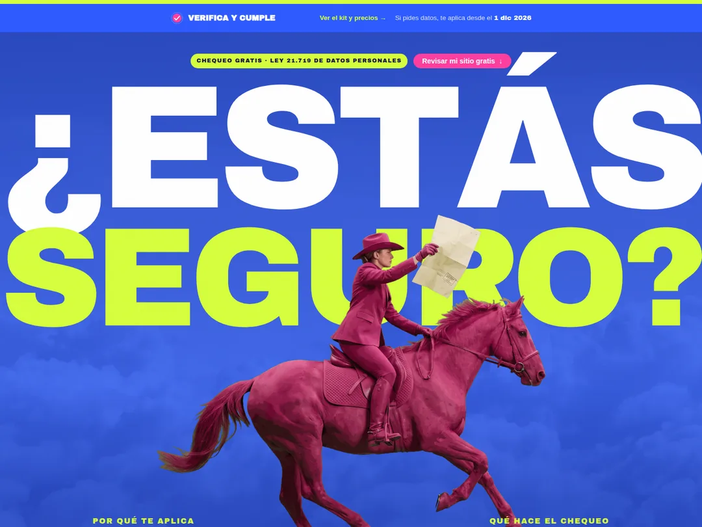
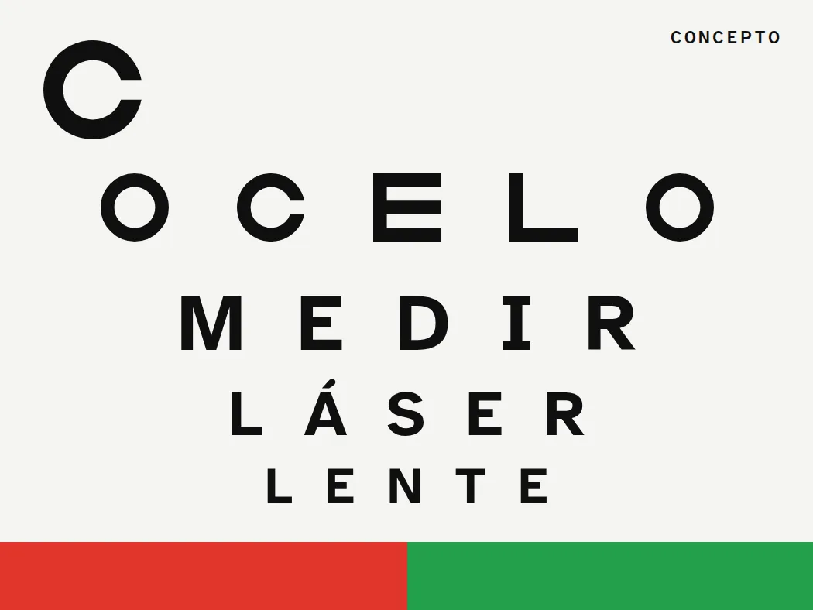
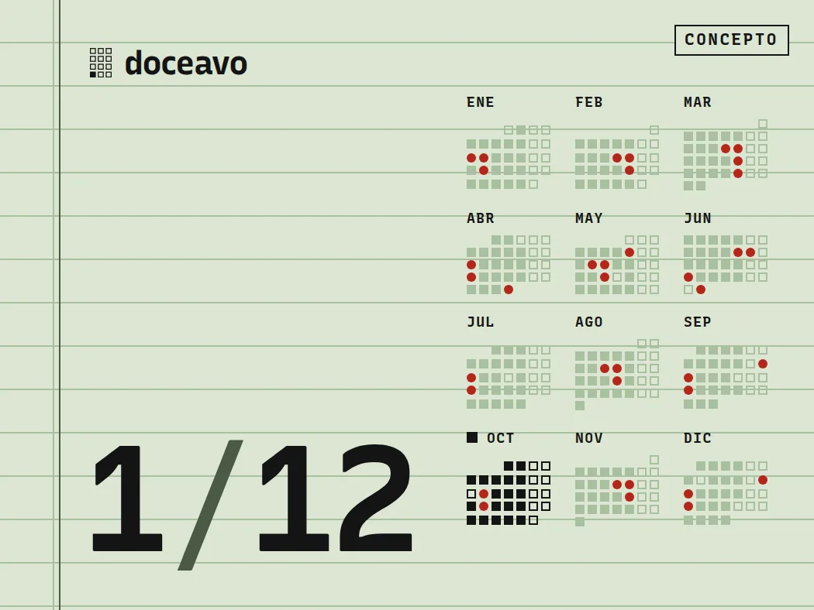
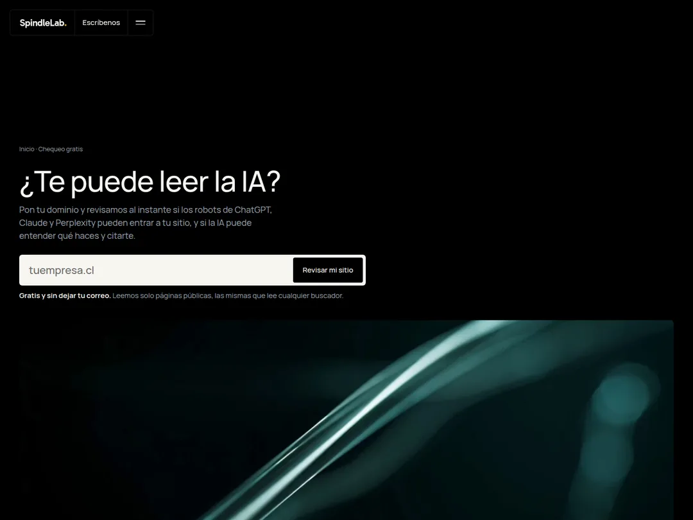
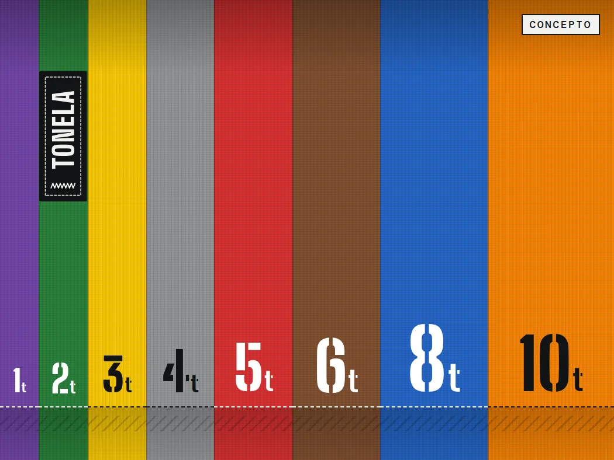
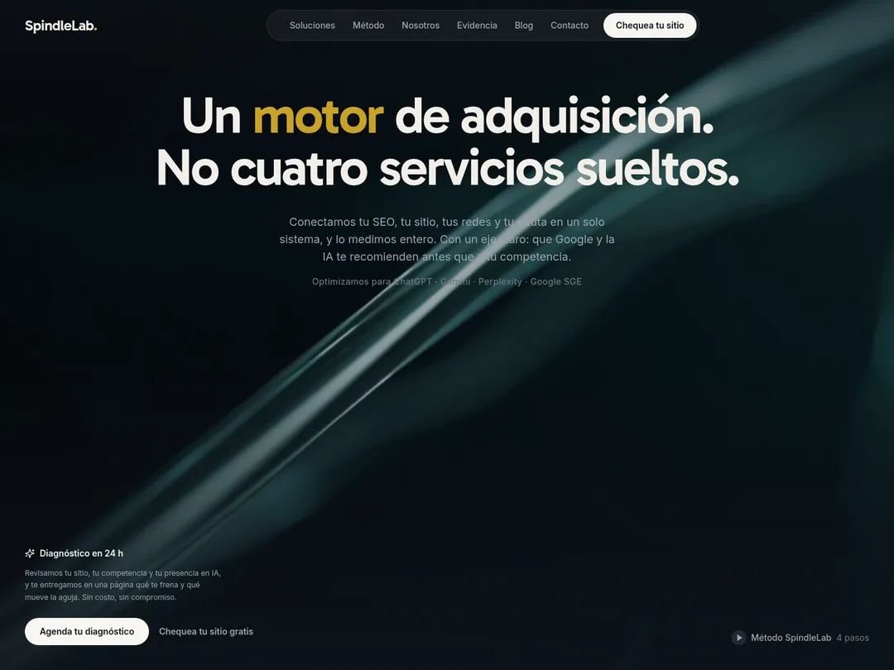

Trabajo. Lo que diseñamos y programamos, y cómo lo resolveríamos en tu rubro.
Cada entrada dice de quién es. Cliente es un encargo pagado: hoy hay uno con caso publicado, con sus dos sitios. Propio lo hicimos para nosotros, sin encargo. Concepto es una marca inventada para mostrar cómo trabajaríamos un rubro: no existe, no tuvo clientes y no lleva cifras.
Bajo cada pieza van las herramientas con que está hecha. Qué hace cada una por el cliente está en su caso.

| Nombre | Tipo | Año | Con qué está hecho | Resultado |
|---|---|---|---|---|
Combeau, fotografíaEl sitio de un fotógrafo de retrato. Él sube sus series desde un panel, y el sitio las publica con cada foto ajustada a la pantalla de quien la mira. Ver el caso | Cliente | 2026 | Decap CMS · Netlify Image CDN | Sin métrica de negocio. Una foto que sube con 805 kB llega en 95 kB (16-oct-2026). |
|
 PraxiUna app de entrenamiento con un coach de IA que se acuerda de cada serie. El modelo conversa; cuándo subir el peso lo calcula el código. Ver el caso | Propio | 2026 | API de Anthropic · Lógica de entrenamiento en código | Sin métrica de uso. 384 de 384 pruebas automáticas en verde (16-oct-2026). |

SesentaUn estudio de abogados laborales que no existe, del lado del trabajador. Su portada cuenta los días hábiles que te quedan para demandar. Ver el concepto | Concepto | 2026 | — | Sin métrica: es un concepto. |
|
 Verifica y CumpleRevisa gratis las señales técnicas que la Ley 21.719, de datos personales, le pide a un sitio con formulario. No es asesoría legal ni certifica que cumples. Ver el caso | Propio | 2026 | Cloudflare Pages Functions | Sin métrica de uso: no guarda los dominios que revisa. |
|
 OceloUna clínica de ojos que no existe, en Providencia. En vez de prometer que vas a dejar los lentes, te muestra el examen que dice si te puedes operar. Ver el concepto | Concepto | 2026 | — | Sin métrica: es un concepto. |
Combeau, modeloEl mismo cliente, el otro oficio: su book de modelo, en inglés, que también se edita desde el panel. Los videos se descargan solo cuando alguien los abre. Ver el caso | Cliente | 2026 | Decap CMS · Video con carga diferida | Sin métrica de negocio. La página abre sin descargar ningún video (16-oct-2026). |
|
 DoceavoUn estudio contable que no existe, en Concepción. Su portada te dice cuándo vence tu próxima declaración mensual, y su logo cambia cada mes. Ver el concepto | Concepto | 2026 | — | Sin métrica: es un concepto. |
|
 El chequeo de 21 señalesEscribes un dominio y en segundos ves si ChatGPT, Claude y Perplexity pueden entrar y entender a qué se dedica. También avisa si el servidor los echa aunque tu configuración los deje pasar. Ver el caso | Propio | 2026 | Cloudflare Pages Functions · Prueba con robots de IA | 21 revisiones, 100 puntos. No guarda los dominios, así que no sabemos cuántas veces se ha usado. |
|
 TonelaUn proveedor de izaje que no existe, en Antofagasta: eslingas, cadenas y grilletes. Ordena su sitio con el color que la norma le da a cada capacidad de carga. Ver el concepto | Concepto | 2026 | — | Sin métrica: es un concepto. |
|
 spindlelab.clEste sitio. El chequeo de la portada corre en nuestro servidor, y Google Analytics y el píxel de Meta no cargan hasta que aceptas las cookies. Ver el caso | Propio | 2026 | Cloudflare Pages Functions · Analítica tras el aviso de cookies | Sin métrica de negocio. Si no aceptas las cookies, la portada no carga nada de Google ni de Meta (16-oct-2026). |